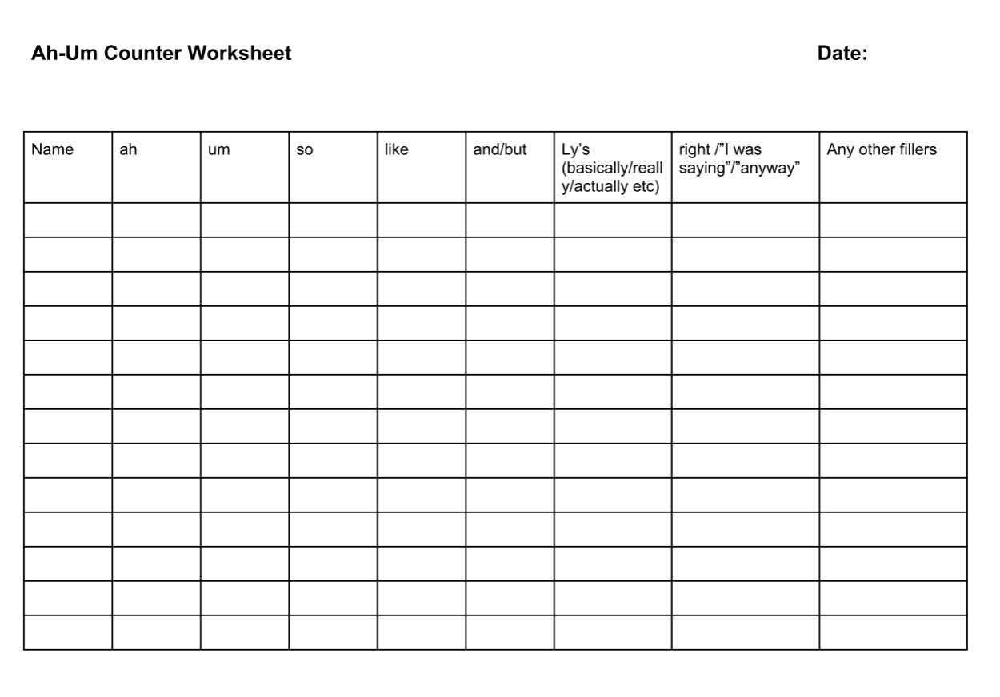

Summary of the Role
- 1. The Ah-um counter helps club members keeps track of all filler words that they use during the meeting.
- 2. At the start of the meeting, explain your role to the group.
- 3. Note down the number of ahs, ums, likes, etc. that each person says in the meeting
- 4. Give a report at the end of the meeting.
- If you have any questions, feel free to contact the VP Education.
Evaluation form
Download:


Videos
Resources:
Resources from Toastmasters Website: Grammarian ,Ah-Um Counter
How to Stop Saying ah-ums
Pausing while speaking